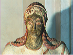
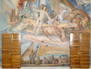

L’innovazione introdotta dall’ Ars Mensurae è riconosciuta tanto in ambito diagnostico quanto progettuale e brevettuale, sia in Italia che all’estero. Si riportano a seguire alcuni progetti di cui Ars Mensurae è promotrice o copartecipante.

PROGETTI INTERNAZIONALI
Coordinator for the main research project Italy-Serbia "Development and implementation of two
novel portable instruments for the analyses of Cultural Heritage: portable scanner XRF and
portable XRD". Granted by the Ministry of Foreign Affairs.
The proposed project has a perfect symmetry between the Italian and Serbian partners. The goal is the
development of two novel portable non invasive instruments for the analyses of Cultural Heritage. Each
of the participants will design an innovative instrument with the know-how of the counterpart. At the end
of the project every participant will own a new instrument and the fully detailed operative procedure to
build the one of the counterpart. The Italian team will build a portable XRF scanner while the Serbian
team will build a portable XRD. The university involved in the project will do a scientific overview while
the art experts (art historian and restorers) will be the end users of the novel instruments that will be
tested on problems and artistic objects put specifically at the disposal of the project.
Partner in the project "LSP Her, Language for Specific Purposes- Language Centers for
Cultural Heritage Preservation". Multilateral project financed by the European Commission.
The project meets the need for communication among those active in material Cultural Heritage
preservation and valorization in the multilingual European environment, by offering complete and easily
accessible possibilities for learning and being assessed in major and loss spoken European languages.
A purposely developed European Language Portfolio permits trainees to codify their specific
knowledge. Italy, Greece, France, England, Slovenia, Spain participate to the project.
Italian coordinator of the Italy-Albania project "Development of SOP's for the conservation of
archeological materials with spectroscopic portable systems". Granted by the Italian Ministry of
Foreign Affairs.
The principal achievements of this project were the development of standard operating procedures for
the archaeometric and diagnostic non destructive analysis of archaoelogical objects either in museums
or in excavations using portable analytical systems based on EDXRF and/or Raman spectroscopy and
the standartization and optimization of the a
analytical systems for non destructive analysis of specific objects and the development of SOP-s for
every specific case.
Protection of Cultural Heritage XRF ART: development of a new solid state detector for the analysis of the Cultural Heritage (SDD, silicon drift detector) financed by the European Commission. The development of the nowadays SDD detector was based on an European project among Germany, Italy, Greece and France. The first systems developed in Milan and Germany were tested on Cultural Heritage objects.

Progetti nazionali
Beni Culturali
Progetto C.HE.MU.SY. Sviluppo di un sistema Micro-XRF portatile svolto in collaborazione con
la Assing spa. Finanziamento FILAS.
Scopo del progetto è stata la produzione di uno strumento portatile XRF-XRD di ultima generazione,
per la rapida e affidabile caratterizzazione chimica e strutturale di beni culturali di varia natura, aventi
superfici interessate da diversi tipi di degrado.
Il vantaggio di effettuare misure XRF-XRD in situ con strumentazioni portatili al posto delle tradizionali
misure di laboratorio, comporta l'abolizione o la consistente riduzione della necessità di
campionamento e la possibilità di studiare rapidamente il bene ove esso si trova, cioè presso musei,
laboratori di conservazione e restauro o sul campo (zona di intervento, cantiere, scavo archeologico),
definendo la natura del bene culturale, i prodotti e gli agenti di degrado insieme allo stato di
conservazione.
Attraverso l'utilizzo intelligente di tecnologia policapillare, le dimensioni efficaci di misura sono
dell'ordine dei 100 micrometri. I partecipanti al progetto sono: Assing Spa, CNR-ISMN Montelibretti,
Laboratorio LANDA "Sapienza" Roma, "Ars Mensurae" Roma.
Progetto "Red Eyes" Sviluppo di un sistema di analisi termografica ad alta risoluzione
svolto in collaborazione con la CRISMA srl. Finanziamento FILAS.
La tecnologia connessa alla Long Wave Thermography (LWT) è ormai matura e ben utilizzata in tutti gli
ambiti industriali, prevenzione incendi, sicurezza etc.. La necessità di discriminare piccoli particolari
posti a grande distanza in un ampio campo visivo ha spinto ad immaginare un sistema termografico ad
altissima risoluzione che metta insieme le caratteristiche tipiche dei sistemi ottico visivi a quelli LWT. Si
è allora ideato un sistema di videosorveglianza di aree ampie in termovisione a doppia termocamera
integrata, la prima con ottica grandangolare, a bassa risoluzione, consente la rilevazione di tutto il
campo visivo, mentre la seconda termocamera con ottica telescopica cattura dei frame limitati ad
elevata risoluzione di tutti i target che è possibile definire in modo automatico o manuale da operatore
sulla immagine proveniente dalla termocamera grandangolare.
Sviluppo di un "Sistema innovativo di micro-XRF e micro-RAMAN per l'analisi in loco non
invasiva di Beni Culturali". Progetto finanziato dalla Provincia di Roma.
Lo sviluppo di strumentazione portatile per l'analisi in situ di opere d'arte ha subito negli ultimi anni una
accelerazione incredibile dovuta principalmente alla disponibilità di tecnologie compatte ed alla
definizione di specifici protocolli di analisi. Le due tecniche che hanno maggiormente usufruito di questo
miglioramento tecnologico sono la Fluorescenza X e la spettroscopia Raman. Le due tecniche
permettono l'analisi chimica elementale e molecolare dei punti esaminati senza ricorrere a
campionamento distruttivo. Il passaggio successivo allo sviluppo tecnologico fin ora fatto è di
permettere questo tipo di indagine sempre in situ ma su risoluzioni spaziali dell'ordine non più di
millimetri, ma di frazioni di millimetro. Il passaggio successivo è quindi la produzione e l'uso di strumenti
di micro Fluorescenza X e micro Raman.
Lo scopo del progetto è di sviluppare uno strumento scientifico che allo strumento micro Raman associ
uno strumento micro Fluorescenza X che possa effettuare ambo le misure contemporaneamente sullo
stesso campione.
SAIME: Sistemi analitici innovativi per lo studio del titolo delle leghe preziose. Progetto
finanziato dal Ministero della Ricerca.
Il progetto SAIME è un progetto finanziato dal Ministero dell'Università e Ricerca allo scopo di studiare
e sviluppare sistemi di analisi delle leghe preziose. La prima parte del sottoprogetto relativo all'uso della
EDXRF per l'analisi non distruttiva delle leghe preziose prevede di individuare tra le macchine EDXRF
presenti sul mercato quali presentino le caratteristiche più promettenti e le maggiori potenzialità in
funzione dell'applicazione all'analisi delle leghe di metalli preziosi. È stato quindi necessario mettere a
punto un protocollo di analisi per la valutazione dei diversi strumenti. Parte del progetto SAIME è
anche lo sviluppo di software specifici; nel protocollo si è quindi deciso di non considerare i software
che accompagnano le macchine, cioè la valutazione delle caratteristiche degli strumenti non si è
basata semplicemente sulla capacità del singolo sistema di analisi di fornire risultati assoluti su una
particolare serie di campioni, ma ha riguardato una analisi globale delle prestazioni hardware dello
strumento, in maniera tale da poter valutare le potenzialità del singolo sistema nell'applicazione alle
leghe per oreficeria.
SAPAB: Analisi, protezione e restauro da atti vandalici delle superfici marmoree. Progetto
finanziato dal Ministero della Ricerca.
L'obiettivo del progetto SAPAB è di definire un sistema integrato di analisi, intervento e pulitura sui
graffiti invadenti. Nel progetto si è sviluppato l'utilizzo della tecnica XRF e di composti chimici adatti alla
pulitura di superfici marmoree.

Biomedicale
Progetto per lo sviluppo di algoritmi innovativi per la generazione di una nuova classe di
prodotti a scintillazione basati sull'integrazione olistica delle specifiche proprietà funzionali:
HOLISCINT. Il progetto ha ottenuto un finanziamento della Comunità Europea nell'ambito dei progetti di
R&S delle PMI del Lazio di cui al POR FESR Lazio 2007-2013.
Progetto per la costruzione di una "Sonda scintigrafica goniometrica per la rapida localizzazione spaziale di molecole radiomarcate per impiego diagnostico e chirurgico". Progetto di ricerca industriale e sviluppo sperimentale dell' associazione Temporanea di Imprese SMART S.r.l, NUCLEOMED S.r.l., ARS MENSURAE e Finanziato dalla FILAS.
Progetto dell'Imaging adattivo COOADIMA dell' azienda Kay Systems Italia SPA relativa al Progetto industriale di ricerca e sviluppo di Tecniche computazionali innovative per lo sviluppo di strumentazioni basate su imaging adattivo ADIMA. Finanziato dalla FILAS.
Progetto "Sistema avanzato di imaging molecolare per bio-medicina" finanziato dalla FILAS.

Brevetti
FIS2007000259: Dual Mode XRF.
RM2010A000003: Identification method for paintings.
RM2013A000705: Apparatus and method for EDXRF analysis with open-air beams.